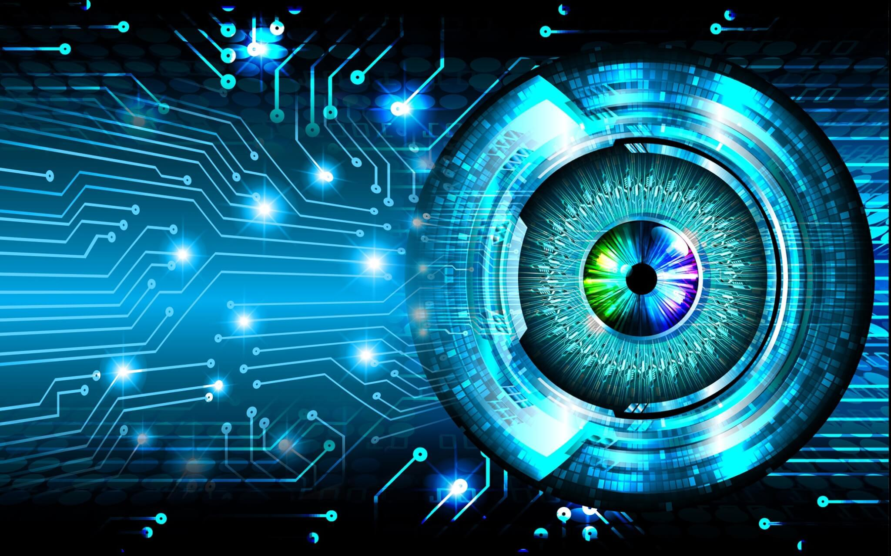

La visión por computadora es una rama de la inteligencia artificial que permite a las computadoras analizar, reconocer e interpretar imágenes y videos. Su objetivo es identificar objetos, personas, movimientos y otros elementos visuales para obtener información útil.
Esta tecnología utiliza algoritmos y modelos de aprendizaje automático para reconocer patrones en los datos visuales. De esta manera, las máquinas pueden realizar tareas que normalmente requieren la capacidad visual humana.
El funcionamiento general de la visión por computadora se puede dividir en varias etapas:
| Aplicación | Descripción |
| Reconocimiento facial | Permite reconocer personas mediante sus rostros. |
| Imágenes médicas | Ayuda a analizar radiografías y detectar posibles enfermedades. |
| Detección de objetos | Identifica objetos, como vehículos y personas, en imágenes y videos. |
Permite identificar o verificar rostros mediante características faciales. Se utiliza en algunos sistemas de seguridad, control de acceso y autenticación de dispositivos.
Ayuda a los profesionales de la salud a examinar radiografías, tomografías y resonancias magnéticas. Puede detectar patrones sospechosos y apoyar la identificación de determinadas enfermedades.
Permite localizar y reconocer objetos dentro de imágenes o videos. Se utiliza en vehículos autónomos, robots, sistemas de vigilancia y procesos industriales.